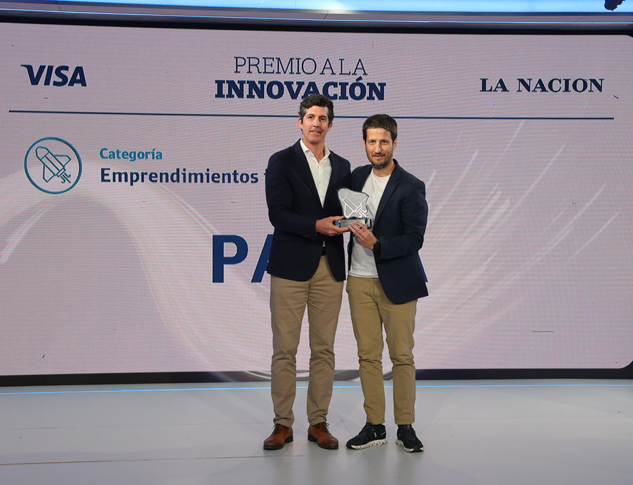
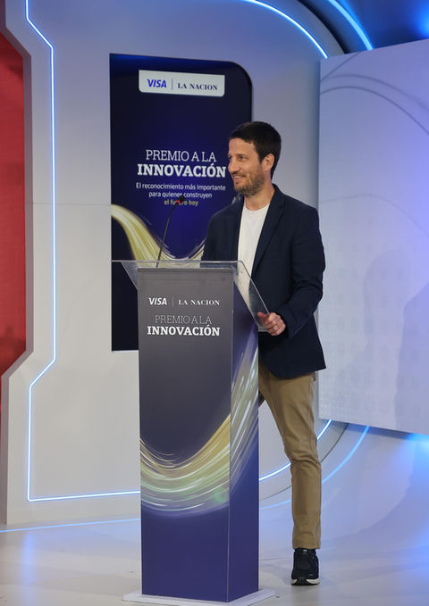
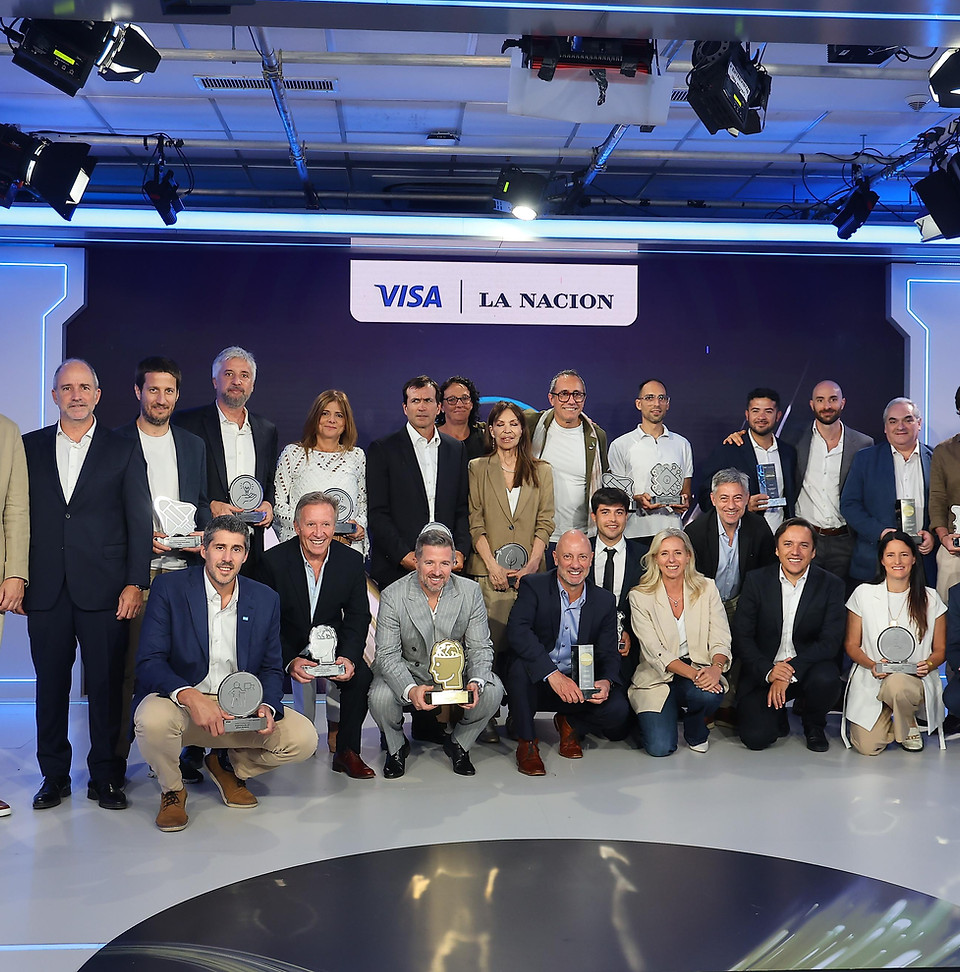

Buenos Aires, October 22, 2026 — PAUSA is a startup that has just been recognized with the VISA LA NACIÓN Innovation Award. The award recognizes initiatives with high symbolic, strategic, and cultural impact in the field of organizational management and well-being.
As a technology company, PAUSA developed an inner transformation platform focused on managing people, teams, and organizations. The jury highlighted PAUSA's ability to integrate reflexive technology, consulting, artificial intelligence, and data visualization into a methodology that promotes balance, consciousness, and presence in everyday work. Its data-centric approach helped hundreds of teams redefine their strategic objectives and reconnect with the deeper purpose of their roles.
“PAUSA doesn't just transform processes, it transforms people. Our proposal is an invitation to be present, to decide with meaning, and to lead with peace,” says Santiago Cordone, its founder.
With more than a million data points processed and a growing community of organizations choosing to work from a more efficient and healthier perspective, PAUSA is establishing itself as an international benchmark in conscious management.
The 2026 VISA La Nación Innovation Award celebrates this disruptive and innovative application, recognizing PAUSA as a platform that not only responds to the challenges of the present, but reframes them from a deep, human, and strategic perspective.

